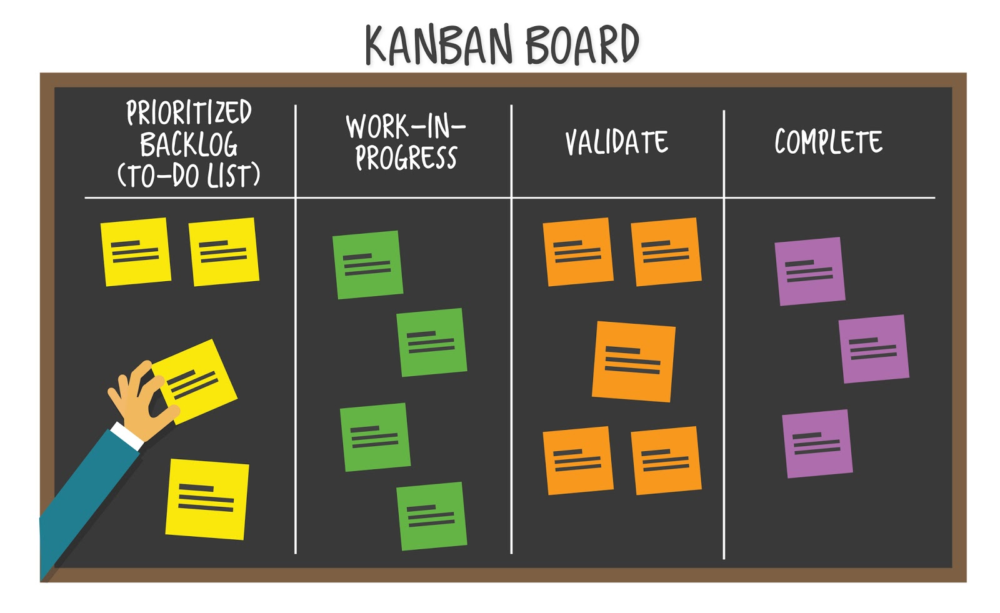

A project management methodology that is actively used in the development of information systems for agile software development.
Scrum is built on the principles of time management (quality control of the development process).
Product Owner - represents the interests of end users and other product stakeholders.
Scrum Master - conducts meetings, monitors compliance with all Scrum principles.
Scrum team - a team of project developers, consisting of specialists of different profiles: testers, programmers, architects, analysts. The average team size is 5-9 people.
Scrum architecture consists of the following blocks: Product-backlog, Sprint-backlog and Sprint.
Product-backlog - a complete list of all tasks, the implementation of which results in the final product.
Sprint-backlog - the list of works, which was determined by the team and agreed with the Product Owner, for the next period (sprint). In the sprint backlog are taken from the Product-backlog.
Sprint - the length of time (2-4 weeks) taken to complete the list of tasks from the Sprint Backlog that must be completed on time and demonstrated to the Product Owner.
Sprint planning - it is a meeting where everyone (development team, scrum master, product owner) is in attendance. During this meeting, the Product Owner defines the priority tasks that he wants to see completed during the sprint. The team estimates in time how much of the desired they can complete and for how long. As a result, a list of tasks is formed, which must be fully implemented during the sprint.
The Product Owner maintains a list of the requirements for the functionality of the project, sorted by their importance. At this stage, open the backlog for editing by all participants. The entire project backlog is divided into sprints for each of which a sprint backlog is formed.
At the end of the rally, something like a task board is formed.
